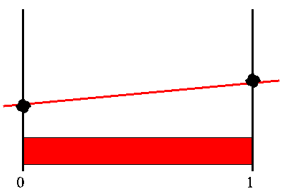
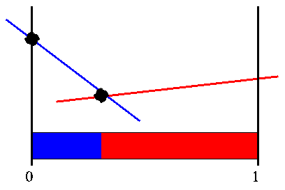

POMDPs for Dummies: Page 10
Back
| POMDP Tutorial
| Next

Cheng's Linear Support Algorithm
The next algorithm, proposed by Cheng (1988), starts with Sondik's
idea, but opts for less strict constraints. Cheng's linear support
algorithm forgets about focusing on actions and future courses of
actions. It simply picks a point, generates the vector for that point
and then checks the region of that vectors to see if it is the correct
one at all corners (vertices) of the region. If not it adds the
vector at that point and checks its region.
This sequence of figures shows how Cheng's linear support region
works. It starts with an arbitrary point, and we assume we pick the
middle point in the belief space. For a given point we can easily
find the best vector at that point, though we have no idea of what the
region is where this vector is best. We assume that this vector is
V' and attempt to either prove or disprove that this is the
real V' we are after. Here is what we start with:

Cheng's linear support
If this is not the true V' then the biggest different between
the two must lie at one of the edge points of the belief region where
that vector dominates. Since we only have one vector, it dominates
everywhere and the edge points are the two extreme points of the
belief space. When then go through these points, and generate the
vectors at these points. When we plug in the far left point we find
that the vector we generate is different from the one we previously
found. We throw this vector into our set of vectors and assume that
this is V'.

Cheng's linear support
If we check the edge points of the region where the blue vector is
better than the red vector, we find either points we have dealt with
before or that they generate a vector we already have. We still have
the rightmost belief point which we generated from the first vector.
When we generate the vector for this point we find a new vector, so we
include that in our set.

Cheng's linear support
When we check the corner points of the green vectors region, we find
either duplicate points or points that generate duplicate vectors.
Since we have check each vectors region and processed all the points,
we are assured that the current set of vector is indeed the value
function, V' we were looking for.
The two key points are: if the value function is incorrect, the
biggest difference will occur at a corner; and if we generate all
possible region corners, we are assured of not missing anything.
Back
| POMDP Tutorial
| Next